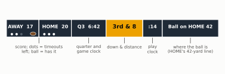
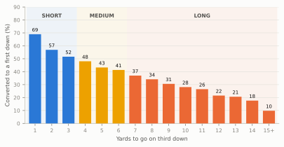
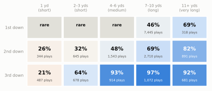
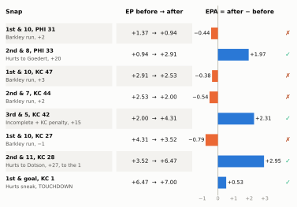
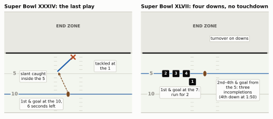
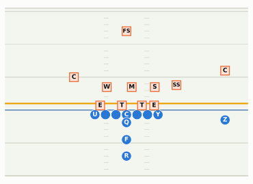
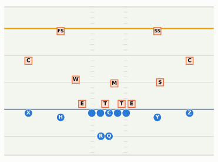
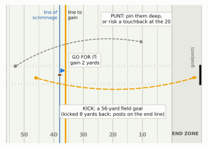

Show the Python (shared helpers and the data this chapter uses)
import osimport shutilimport numpy as npimport pandas as pdimport matplotlib.pyplot as pltfrom matplotlib import animationfrom matplotlib.colors import LinearSegmentedColormapfrom matplotlib.patches import FancyArrowPatch, FancyBboxPatch, Rectangle, Circle, Ellipsefrom IPython.display import HTML, Markdown, displayfrom gridiron import Play, Player, Field, offense, defense, style, FIELD_WIDTH, HASH_NEARfrom gridiron.data import pbpstyle.apply()PDF = os.environ.get("RTG_FORMAT", "").lower() in ("pdf", "typst", "print")MID = FIELD_WIDTH /2MINUS ="−"BOXKW =dict(fontsize=6.8, color=style.INK, ha="center", va="center", zorder=10, bbox=dict(boxstyle="round,pad=0.25", fc=style.SURFACE, ec=style.BASELINE, lw=0.6))def signed(v, nd=2):"""+1.23 / −0.45 with a real minus sign."""returnf"{v:+.{nd}f}".replace("-", MINUS)def pct(v, nd=0):returnf"{100* v:.{nd}f}%"def html_video(anim):"""Embed a matplotlib animation in the HTML build (mp4 if ffmpeg exists, else JS player)."""if shutil.which("ffmpeg"): html = anim.to_html5_video(embed_limit=40).replace("<video ", '<video style="max-width:100%;height:auto" ')else: html = anim.to_jshtml(default_mode="once") plt.close(anim._fig) display(HTML(html))def clip_texts(ax):"""gridiron prints field numbers at both sets of numbers; hide any that fall outside a zoomed window."""for t in ax.texts: t.set_clip_on(True)def drop_numbers(ax):"""Remove gridiron's painted yard numbers (they would sit under players or labels)."""for t inlist(ax.texts):if t.get_text().strip().isdigit(): t.remove()# The book's position tags (decoded in 01-03, The Twenty-Two).OFF_TAGS = {"QB": "Q", "FB": "F", "RB": "R"}DEF_TAGS = {"SDE": "E", "WDE": "E", "SDT": "T", "WDT": "T", "SAM": "S", "MIKE": "M", "WILL": "W","LCB": "C", "RCB": "C", "NB": "$", "FS": "FS", "SS": "SS"}def tagged(players): table =lambda q: OFF_TAGS if q.side =="off"else DEF_TAGS # noqa: E731return [q.moved(label=table(q)[q.key]) if q.key in table(q) else q for q in players]# --- nflverse play-by-play, regular seasons 2016-2025 (cached under data/cache) -------------------COLS = ["season", "season_type", "game_id", "play_id", "posteam", "defteam", "down", "ydstogo","yardline_100", "goal_to_go", "play_type", "pass", "qb_dropback", "ep", "epa", "success","first_down", "series", "series_success", "fixed_drive", "fixed_drive_result", "desc","yards_gained", "wp", "half_seconds_remaining", "interception", "fumble_lost", "sack","result", "home_team", "away_team", "field_goal_result", "kick_distance", "air_yards", "touchback"]raw = pbp(list(range(2016, 2026)), columns=COLS)reg = raw[raw.season_type =="REG"].copy()snaps = reg[reg.play_type.isin(["pass", "run"]) & reg.down.notna()].copy() # runs and passess25 = reg[reg.season ==2025]neutral25 = snaps[(snaps.season ==2025) & (snaps.half_seconds_remaining >120) & snaps.wp.between(0.2, 0.8)]S = {} # numbers quoted in the text# series of downs, 2025: share that ended in a new first down or a touchdownser = s25.dropna(subset=["series"]).drop_duplicates(["game_id", "series"])ser = ser[ser.down.notna()]S["series_ok"] = ser.series_success.mean()# fourth-down choices, 2025f4 = s25[(s25.down ==4) & s25.play_type.isin(["pass", "run", "punt", "field_goal"])]S["punt4"] = (f4.play_type =="punt").mean()S["fg4"] = (f4.play_type =="field_goal").mean()S["go4"] = f4.play_type.isin(["pass", "run"]).mean()short4 = reg[(reg.down ==4) & reg.play_type.isin(["pass", "run", "punt", "field_goal"]) & (reg.ydstogo <=3)& reg.wp.between(0.1, 0.9)]go_by_year = short4.groupby("season").play_type.apply(lambda s: s.isin(["pass", "run"]).mean())S["go16"], S["go25"] = go_by_year.loc[2016], go_by_year.loc[2025]# turnovers and sacks, 2025games25 = s25.game_id.nunique()S["games"] = games25S["ints"], S["fls"] =int(s25.interception.sum()), int(s25.fumble_lost.sum())S["to_pg"] = (S["ints"] + S["fls"]) / games25S["sacks"] =int(s25.sack.sum())S["sack_rate"] = s25.sack.sum() / s25.qb_dropback.sum()give = s25.groupby(["game_id", "posteam"])[["interception", "fumble_lost"]].sum().sum(axis=1).rename("give")g = s25.drop_duplicates("game_id")[["game_id", "home_team", "away_team", "result"]]g = g.merge(give.rename_axis(["game_id", "home_team"]).rename("hg").reset_index(), on=["game_id", "home_team"])g = g.merge(give.rename_axis(["game_id", "away_team"]).rename("ag").reset_index(), on=["game_id", "away_team"])g = g[(g.hg != g.ag) & (g.result !=0)]S["fewer_won"] = np.where(g.hg < g.ag, g.result >0, g.result <0).mean()S["to_games"] =len(g)# drives, 2025: one row per (game, team with the ball, drive), counted the same way as in 01-01dr = (s25.dropna(subset=["posteam", "fixed_drive"]).groupby(["game_id", "posteam", "fixed_drive"]) .agg(result=("fixed_drive_result", "first")).reset_index())S["drives_pg"] =len(dr) / games25 /2res = dr.result.value_counts(normalize=True)S["d_td"], S["d_fg"], S["d_punt"] = res.get("Touchdown", 0), res.get("Field goal", 0), res.get("Punt", 0)S["d_to"] = res.get("Turnover", 0) + res.get("Turnover on downs", 0)starts = snaps[snaps.season ==2025].sort_values(["game_id", "play_id"]).drop_duplicates(["game_id", "fixed_drive"])S["start"] =100- starts.yardline_100.median()# expected points for first-and-10 by yard line (nflverse model, 2021-2025 snaps)f10 = reg[reg.play_type.isin(["pass", "run", "punt", "field_goal"]) & (reg.down ==1)& ((reg.ydstogo ==10) | (reg.goal_to_go ==1)) & reg.season.between(2021, 2025)]EP10 = f10.groupby("yardline_100").ep.mean()mid = reg[reg.play_type.isin(["pass", "run", "punt", "field_goal"]) & reg.yardline_100.between(48, 52)& (reg.ydstogo ==10) & reg.season.between(2021, 2025)]EP_DOWN = mid.groupby("down").ep.mean()# fourth-and-2 conversion rate, 2016-2025 (runs and passes)S["c4_2"] = snaps[(snaps.down ==4) & (snaps.ydstogo ==2)].first_down.mean()# field goals: length minus the line of scrimmage (the holder's depth plus the 10-yard end zone)fgs = reg[(reg.play_type =="field_goal") & reg.kick_distance.notna()]S["fg18"] = ((fgs.kick_distance - fgs.yardline_100) ==18).mean()# third down, 2025 neutral: pass share at 1, 2 and 3 yards to goP3 = neutral25[neutral25.down ==3].groupby("ydstogo")["pass"].mean()t11 = neutral25[(neutral25.down ==3) & (neutral25.ydstogo >=11)]S["run_3_11"] = (t11["pass"] ==0).mean()# second-and-short, 2021-2025 neutral: run share, and how often its passes travel 15+ yards in the airnn = snaps[snaps.season.between(2021, 2025) & (snaps.half_seconds_remaining >120) & snaps.wp.between(0.2, 0.8)]s2s = (nn.down ==2) & (nn.ydstogo <=2)S["run_2s"] = (nn[s2s]["pass"] ==0).mean()att = nn[(nn["pass"] ==1) & nn.air_yards.notna()]a2s = (att.down ==2) & (att.ydstogo <=2)S["deep_2s"], S["deep_oth"] = (att[a2s].air_yards >=15).mean(), (att[~a2s].air_yards >=15).mean()# the simplest forecaster: "pass when it's long, run when it's short"guess = (((neutral25.down ==1) & (neutral25.ydstogo >10)) | ((neutral25.down ==2) & (neutral25.ydstogo >=7))| ((neutral25.down >=3) & (neutral25.ydstogo >=2)))S["rule_acc"] = (guess == (neutral25["pass"] ==1)).mean()S["always_pass"] = neutral25["pass"].mean()# what an EPA number looks like, 2025 runs and passese25 = snaps[snaps.season ==2025]S["within1"] = (e25.epa.abs() <1).mean()S["int_epa"], S["fum_epa"] = e25[e25.interception ==1].epa.mean(), e25[e25.fumble_lost ==1].epa.mean()S["lg_epa"], S["lg_sr"] = e25.epa.mean(), (e25.epa >0).mean()team25 = e25.groupby("posteam").epa.mean()S["top_epa"], S["bot_epa"] = team25.max(), team25.min()
The graphic in the corner of the screen changes from 2nd & 3 to 3rd & 8. Nothing else has happened yet: the offense is still in its huddle, the quick meeting where the play is called. But the announcer is already calling it “an obvious passing down,” the defense is swapping one of its big run-stoppers for an extra pass defender, and the home crowd is on its feet and roaring, because its team is on defense and noise makes it hard for the offense to hear its own signals. Two plays earlier the same graphic read 1st & 10 and nobody in the building knew what was coming. How can two numbers in the corner of the screen tell 70,000 people so much? This chapter answers that, and then goes one step further: it gives you a way to put a price on every snap, so that “he gained eight yards” stops sounding automatically like good news.
You’ll be able to…
Explain the four-down system and the line to gain, and say why teams usually punt on fourth down instead of going for it.
Read the down-and-distance graphic, sort it into short, medium or long, and say what each bucket does to the offense’s options.
Point to the line of scrimmage, explain how the officials spot the ball, and describe what the chain crew (the sticks) does now that cameras do the measuring.
Name the ways the ball changes hands (interception, fumble, turnover on downs, punt) and say why a sack hurts more than the yards it costs.
Treat field position as money: say roughly what a first down at your own 25, at midfield and at the opponent’s 20 is worth in expected points.
Read EPA and success rate as a per-play scorecard: what a +2.0 or a −0.5 means, and why a gain can score as a loss.
Four downs to go ten yards
Here is the whole system in two sentences. The offense gets four tries to gain ten yards. Make it, and it gets four fresh tries; fail, and the ball goes to the other team.
Each try is a down: one play, counted from 1 to 4. The yard line ten yards ahead of where the series began is the line to gain, which on television is the yellow line painted across the picture. Reach it and you have earned a first down: the count resets to 1, and a new line to gain is set ten yards farther on. Announcers use “first down” both for the first play of a series and for the act of earning a new one (“they picked up the first down”).
The second number on the graphic is the distance: how many yards are still needed to reach the line to gain. “2nd & 6” means it’s the second down and six yards remain. Watch a single series play out:
Show the Python
BALL_Y = HASH_NEAR # the ball on the offense's right hash (BDB y)CHAIN_Y =-2.3# the chain crew works just off the near sideline (BDB y < 0)GHOST_Y =-5.0BOX_Y =-8.0SER_X = (31.0, 59.0) # BDB x shown: own 21 to own 49SER_LAT = (-11.0, 31.0) # BDB y shown: the chain crew to a little past the balldef own(yl):"""BDB x of the offense's own yard line."""return10.0+ yldef draw_series(ax, ball, rear, down, gains=(), ghost=None, title=None, labels=False, first=False):"""One moment of a series of downs. ball/rear are BDB x; the front stick is rear + 10. gains = earlier plays [(from_x, to_x)]; ghost = where the rear stick was before a first down.""" ax.clear() front = rear +10 fld = Field(ax=ax, orient="vertical", los=ball, window=(SER_X[0] - ball, SER_X[1] - ball), to_go=front - ball, lateral=SER_LAT, numbers=True) clip_texts(ax) P = fld.xyfor a, b in gains: (x0, y0), (x1, y1) = P(a +0.3, BALL_Y +4.0), P(b -0.3, BALL_Y +4.0) ax.add_patch(FancyArrowPatch((x0, y0), (x1, y1), arrowstyle="-|>", mutation_scale=7, color=style.INK_2, lw=1.0, zorder=5)) ax.text(*P((a + b) /2, BALL_Y +6.6), f"+{b - a:.0f}", fontsize=6.5, color=style.INK_2, ha="center", va="center", zorder=6)if ghost isnotNone: (gx0, gy0), (_, gy1) = P(ghost, GHOST_Y), P(ghost +10, GHOST_Y) ax.plot([gx0, gx0], [gy0, gy1], color=style.MUTED, lw=1.0, ls=(0, (2, 2)), zorder=3)for gy in (gy0, gy1): ax.add_patch(Circle((gx0, gy), 0.55, fc=style.SURFACE, ec=style.MUTED, lw=0.8, zorder=3)) ax.text(*P(ghost -1.4, GHOST_Y), "old\nchains", ha="center", va="top", fontsize=5.8, color=style.MUTED) (cx0, cy0), (cx1, cy1) = P(rear, CHAIN_Y), P(front, CHAIN_Y) ax.plot([cx0, cx1], [cy0, cy1], color=style.INK_2, lw=1.4, zorder=4)for x in (rear, front): ax.add_patch(Circle(P(x, CHAIN_Y), 0.75, fc=style.DEFENSE, ec="white", lw=0.6, zorder=6)) bx, by = P(ball, BOX_Y) ax.add_patch(FancyBboxPatch((bx -1.15, by -1.15), 2.3, 2.3, boxstyle="round,pad=0,rounding_size=0.3", fc=style.INK, ec="white", lw=0.6, zorder=6)) ax.text(bx, by, str(down), color="white", fontsize=7, fontweight="bold", ha="center", va="center", zorder=7) ax.add_patch(Ellipse(P(ball, BALL_Y), 0.9, 1.4, fc=style.BALL, ec="white", lw=0.6, zorder=8))if labels: kw =dict(fontsize=6.2, color=style.INK_2, zorder=7) ax.text(*P(rear -1.6, CHAIN_Y), "rear\nstick", ha="center", va="top", **kw) ax.text(*P(front +1.4, CHAIN_Y), "front\nstick", ha="center", va="bottom", **kw) ax.text(*P(ball +2.0, BOX_Y), "down\nbox", ha="center", va="bottom", **kw) ax.text(*P(front +0.7, 13.0), "line to gain", ha="center", va="bottom", fontsize=6.4, color=style.INK, zorder=7) ax.text(*P(ball -0.7, 13.0), "line of scrimmage", ha="center", va="top", fontsize=6.4, color=style.INK, zorder=7)if first: ax.text(*P(ball +5.0, BALL_Y +3.5), "FIRST\nDOWN", ha="center", va="center", fontsize=7.5, fontweight="bold", color=style.INK, zorder=9, linespacing=1.0, bbox=dict(boxstyle="round,pad=0.3", fc=style.LINE_TO_GAIN, ec="none"))if title: ax.set_title(title, fontsize=8.5, color=style.INK, loc="left", fontweight="bold", pad=3)return fldG1, G2, G3 = (own(25), own(29)), (own(29), own(33)), (own(33), own(36))SERIES = [dict(ball=own(25), rear=own(25), down=1, gains=[], title="1 1st & 10 at own 25"),dict(ball=own(29), rear=own(25), down=2, gains=[G1], title="2 2nd & 6 at own 29"),dict(ball=own(33), rear=own(25), down=3, gains=[G1, G2], title="3 3rd & 2 at own 33"),dict(ball=own(36), rear=own(36), down=1, gains=[G1, G2, G3], ghost=own(25), first=True, title="4 1st & 10 at own 36"),]if PDF: fig, axes = plt.subplots(2, 2, figsize=(6.5, 5.0))for i, (ax, st) inenumerate(zip(axes.flat, SERIES)): draw_series(ax, labels=(i ==0), **st) fig.tight_layout(h_pad=0.8, w_pad=0.6) plt.show()else:# frames: hold each down, slide the ball to the next spot, then move the chains after the first down frames = []for i, st inenumerate(SERIES[:3]): frames += [dict(st, labels=(i ==0))] *10 nxt = SERIES[i +1] a, b = st["ball"], nxt["ball"]for f in np.linspace(0, 1, 9)[1:]: frames.append(dict(st, ball=a + (b - a) * f, gains=st["gains"])) last = SERIES[3] frames += [dict(last, rear=own(25), ghost=None, first=True)] *6for f in np.linspace(0, 1, 9)[1:]: frames.append(dict(last, rear=own(25) + (own(36) - own(25)) * f)) frames += [last] *14 fig, ax = plt.subplots(figsize=(4.2, 3.6)) anim = animation.FuncAnimation(fig, lambda k: draw_series(ax, **frames[k]), frames=len(frames), interval=140) html_video(anim)
Figure 4.1: One series of downs, offense moving up the page, the ball on the right hash. (1) First-and-10 at the offense’s own 25: the line to gain (yellow) is the 35, marked on the sideline by the chain crew’s front stick; the rear stick marks where the series began, and the down box shows which down it is. (2) A 4-yard run makes it second-and-6. (3) A 4-yard pass makes it third-and-2. (4) A 3-yard run crosses the line to gain: first down. The chain crew picks up the sticks and resets them, rear stick at the new spot, front stick ten yards on. The big grey numbers are the yard lines painted on the field.
Notice what doesn’t reset. The yard line keeps advancing play by play; only the down count and the line to gain start over when the offense earns a first down. A series can also go backward: lose three yards on first down and it’s “2nd & 13”, because the line to gain hasn’t moved and the ball has. Penalties do the same: a five-yard penalty on the offense on first down makes it “1st & 15.”
How often does an offense keep the chain moving? In the 2025 regular season, 71% of fresh sets of downs ended in another first down or a touchdown.1 That number is the hidden engine of the whole game. A drive is a chain of these little four-down contests; win roughly seven of every ten and you will usually string together enough of them to get near the end zone, lose one and the drive is over.
ImportantWhy it exists: the rule that made the game move
American football grew out of rugby, and in its earliest college form there was no requirement to gain ground. A team could keep the ball as long as it didn’t lose it. Princeton and Yale played scoreless ties in 1880 and 1881, and in the second, remembered as the “block game,” Princeton held the ball for the whole first half without trying to advance it and Yale did the same in the second, because a tie was enough.2 In 1882 Yale’s Walter Camp, a halfback who had already made himself the sport’s most influential rule-maker, proposed a fix: keep the ball only if you advance five yards in three downs. His fellow committee members thought it unworkable and adopted it only on condition that it could be dropped if it failed. It didn’t. The distance was doubled to ten yards in 1906, the same year the forward pass was legalized, and a fourth down was added in 1912, which gave the modern “four downs to go ten.”3
The trade the rule makes is the heart of the sport: the offense gets a guarantee (four tries) in exchange for an obligation (make progress, or give the ball back). Every strategic idea in this book, from third-down defenses to fourth-down analytics, lives inside that bargain.
Reading the graphic
Every broadcast keeps a running summary at the top or bottom of the screen, the score bug. Networks style it differently, but the pieces are always the same:
Show the Python
fig, ax = plt.subplots(figsize=(6.5, 2.0))ax.set_xlim(0, 100); ax.set_ylim(0, 30); ax.axis("off")y0, h =15, 8cells = [(1, 15, "AWAY 17", False), (16, 15, "HOME 20", False), (31, 16, "Q3 6:42", False), (47, 17, "3rd & 8", True), (64, 9, ":14", False), (73, 26, "Ball on HOME 42", False)]for x, w, txt, hi in cells: ax.add_patch(Rectangle((x, y0), w, h, fc=style.LINE_TO_GAIN if hi else"#1f2a37", ec="white", lw=1.2)) tx = x + w /2- (1.0if txt.startswith("AWAY") else0) ax.text(tx, y0 + h /2+0.6, txt, ha="center", va="center", fontsize=9.5if hi else8, fontweight="bold", color=style.INK if hi else"white")for i inrange(3):for k, x inenumerate((3.5, 18.5)): used = (k, i) == (0, 2) # the away team has used one timeout ax.add_patch(Circle((x + i *2.2, y0 +1.3), 0.55, fc="#56606b"if used else"white", ec="none"))ax.add_patch(Ellipse((13.3, y0 +1.5), 2.6, 1.6, fc=style.BALL, ec="white", lw=0.6)) # possession markerfor x, txt in [(16, "score; dots = timeouts\nleft; ball = has it"), (39, "quarter and\ngame clock"), (55.5, "down & distance"), (68.5, "play\nclock"), (86, "where the ball is\n(HOME's 42-yard line)")]: ax.plot([x, x], [y0 -0.4, y0 -2.8], color=style.INK_2, lw=0.8) ax.text(x, y0 -3.4, txt, ha="center", va="top", fontsize=7, color=style.INK_2, linespacing=1.15)plt.show()

Figure 4.2: A generic score bug (every network styles its own). The down and distance is the box to read first: here, third down with 8 yards to go. Don’t confuse it with the quarter, which sits beside the game clock (‘Q3’; some networks write ‘3rd’ there too). The small football marks the team with the ball, here the visitors. The play clock counts down to the snap; the dots under each team are timeouts left in the half. ‘Ball on HOME 42’ means the ball is on the home team’s 42-yard line, so the visiting offense is 42 yards from a touchdown.
The score, the clock and the timeouts were the subject of The Game in Fifteen Minutes. The new piece is the yellow box, and two details about it are worth knowing.
“& Goal.” When the line to gain would fall in or past the end zone, the graphic says 1st & Goal instead of a number: the only way to reach the line to gain is to score. From the opponent’s 6, it’s 1st & Goal, and a three-yard gain makes it 2nd & Goal from the 3. There are no more first downs available, only the goal line.
“& Inches.” The graphic shows whole yards, so its number is a close approximation; the real target is the line itself. When the ball is spotted just short of the line, broadcasters say “4th & inches,” and the graphic usually shows 1.
Short, medium and long
Broadcasters and this book sort distances into three buckets, because each one changes what the offense can realistically do:
Short (1–3 yards): a good run can get it, so the offense has its whole menu, runs and passes, and the defense has to respect both. (On third down the bucket splits in two, as you’ll see below.)
Medium (4–6 yards): a run can get it but usually doesn’t; most offenses throw short passes that are designed to get just past the line to gain.
Long (7 yards or more, and “very long” past 10): only a pass, or a rare big run, gets there. The defense knows it and drops more players back to defend passes.
The buckets matter most on third down, because that’s usually the last real chance before the offense has to punt. Here is how often third downs were converted over the last ten seasons, by the yards needed:
Show the Python
t3 = snaps[snaps.down ==3].copy()t3["ytg"] = t3.ydstogo.clip(upper=15).astype(int)conv = t3.groupby("ytg").first_down.mean() *100S["c3_1"], S["c3_5"], S["c3_10"] = conv.loc[1] /100, conv.loc[5] /100, conv.loc[10] /100fig, ax = plt.subplots(figsize=(6.5, 3.0))for a, b, lab, col in [(0.5, 3.5, "short", style.OFFENSE), (3.5, 6.5, "medium", style.LINE_TO_GAIN), (6.5, 15.5, "long", style.DEFENSE)]: ax.axvspan(a, b, color=col, alpha=0.07, lw=0) ax.text((a + b) /2, 83, lab.upper(), ha="center", va="center", fontsize=7.5, fontweight="bold", color=style.INK_2)cols = [style.OFFENSE if k <=3else (style.LINE_TO_GAIN if k <=6else style.DEFENSE) for k in conv.index]ax.bar(conv.index, conv.values, color=cols, width=0.72, zorder=3)for k, v in conv.items(): ax.text(k, v +1.2, f"{v:.0f}", ha="center", va="bottom", fontsize=6.8, color=style.INK)ax.set_xticks(list(conv.index), [str(k) if k <15else"15+"for k in conv.index], fontsize=7.5)ax.set_xlim(0.4, 15.6); ax.set_ylim(0, 90)ax.set_xlabel("Yards to go on third down", fontsize=8)ax.set_ylabel("Converted to a first down (%)", fontsize=8)ax.tick_params(axis="y", labelsize=7.5)ax.grid(axis="x", visible=False)plt.show()

Figure 4.3: Third-down conversion rate by yards to go, every third-down run and pass in the 2016-2025 regular seasons. Sacks and scrambles (the quarterback running because no one is open) count as passes; ‘15+’ is every distance of 15 yards or more. Each extra yard costs a few percentage points: third-and-1 is converted about seven times in ten, third-and-10 under three in ten. Source: nflverse play-by-play.
Read the chart as a price list. Every yard you leave for third down costs you a few percentage points of keeping the drive alive. That is why coaches talk about first and second down as setting up third: a four-yard gain on first down doesn’t look like much, but it turns a likely third-and-long into a manageable third-and-short. The language coaches use for this, staying “on schedule,” is built up in Early Downs and Field Zones, and third down gets its own chapter, Third Down: The Money Down.
What the graphic tells you about the next play
The down and distance doesn’t just predict whether the offense will convert. It predicts what it will try. Here is how often offenses called a pass in each situation in 2025, leaving out the last two minutes of each half and lopsided games, where the score and the clock dictate the call:
Show the Python
BUCKETS = ["1", "2–3", "4–6", "7–10", "11+"]p = neutral25[neutral25.down <=3].copy()p["dist"] = pd.cut(p.ydstogo, [0, 1, 3, 6, 10, 99], labels=BUCKETS)tab = p.groupby(["down", "dist"], observed=False)["pass"].agg(["mean", "size"]).reset_index()PASS = {(int(r.down), str(r.dist)): r["mean"] for _, r in tab.iterrows()}cmap = LinearSegmentedColormap.from_list("pr", [style.DEFENSE_TINT, "#f6f4ee", style.OFFENSE_TINT, style.OFFENSE])fig, ax = plt.subplots(figsize=(6.5, 2.6))for _, r in tab.iterrows(): i, j =int(r.down) -1, BUCKETS.index(str(r.dist)) rare = r["size"] <250 dark = (not rare) and r["mean"] >=0.8 ax.add_patch(Rectangle((j, 2- i), 0.96, 0.92, fc=style.GRID if rare else cmap(float(r["mean"])), ec="white", lw=1.5)) ax.text(j +0.48, 2- i +0.55, "rare"if rare elsef"{r['mean']:.0%}", ha="center", va="center", fontsize=8if rare else10.5, fontweight="bold", color="white"if dark else style.INK)ifnot rare: ax.text(j +0.48, 2- i +0.24, f"{int(r['size']):,} plays", ha="center", va="center", fontsize=6.3, color="white"if dark else style.INK_2)ax.set_xlim(-0.05, 5); ax.set_ylim(-0.05, 3)ax.set_xticks([k +0.48for k inrange(5)], ["1 yd\n(short)", "2–3 yds\n(short)", "4–6 yds\n(medium)", "7–10 yds\n(long)", "11+ yds\n(very long)"], fontsize=7.5)ax.set_yticks([2.46, 1.46, 0.46], ["1st down", "2nd down", "3rd down"], fontsize=8)ax.tick_params(length=0); ax.grid(False)for sp in ax.spines.values(): sp.set_visible(False)ax.xaxis.tick_top()plt.show()

Figure 4.4: How often the offense passed, by down and distance, 2025 regular season, neutral situations: outside the last two minutes of each half, with each team’s win probability (its chance of winning, estimated from the score, the clock and the field position) between 20% and 80%. ‘Pass’ means a called pass, so sacks and scrambles count. The short bucket is split, because third-and-1 and third-and-3 are different worlds. First down is almost always first-and-10; the short first-down cells come from goal-line and penalty situations and are marked ‘rare’. Source: nflverse play-by-play.
Three things jump out, and each one has a reason.
First-and-10 is the most balanced situation in football. Offenses pass a little under half the time. Nothing about the situation forces their hand, so it’s where play-callers have the most freedom, and where defenses know the least.
Third-and-4 or longer is close to a sure pass: 87% on third-and-4 and above 90% at longer distances. A run gains four yards less than half the time, so on the down that decides whether you punt, offenses throw. That predictability is the defense’s best friend: it can send extra pass rushers after the quarterback, or bring in extra defensive backs (the pass defenders who line up farthest from the ball), without worrying much about the run. One oddity: on third-and-11-plus the pass share dips. About one snap in 12 there is a deliberate run, often by an offense that doesn’t fancy its chances and would rather set up the punt or a field-goal try than risk an interception.
Third-and-1 is a run down; third-and-3 is a pass down. In 2025 offenses threw on only 21% of third-and-1 snaps, 53% of third-and-2 and 75% of third-and-3. The “short” bucket hides the steepest slope in the grid, which is why coaches’ call sheets cut third down finer than broadcasters do, with separate plans for third-and-1, third-and-2-to-3, and so on.
That grid is the beginning of reading the game. Before you know anything about formations or personnel, the graphic already tells you whether the offense’s options are wide open or nearly gone.
CautionCommon misconception
“Second-and-short is a free shot downfield.” You’ll hear the logic from announcers and coaches alike: on second-and-1 the offense can afford to waste a down, because even if a deep pass falls incomplete it’s still third-and-1, so it’s the perfect moment for a shot play. The logic is sound; the behavior mostly isn’t there. In neutral situations from 2021 to 2025, offenses ran on 73% of second-and-1-or-2 snaps, and when they did throw, the pass traveled 15 or more yards in the air 17% of the time, against 19% for every other pass (nflverse play-by-play). In practice second-and-short is a running down: most offenses take the likely first down rather than the gamble.
Where the ball is: the line of scrimmage and the spot
Every play starts from a line. The line of scrimmage is the imaginary line across the field through the ball before the snap; each team must stay on its own side of it until the ball moves. (Strictly, each team has its own line through its end of the ball, with a ball-length neutral zone between; see The Pre-Snap Phase.) On a broadcast it’s the blue line the network paints across the picture. The snap starts the play from there.
Where does the next line of scrimmage come from? From the spot: where the officials place the ball after the previous play. The rule behind it is forward progress: the ball is spotted at the farthest point it reached toward the opponent’s goal before the play ended, not where the ball carrier ended up after defenders drove him backward (forward progress is one of the rules of the ball covered in Part 9). The protection is only against being driven back: a runner who retreats on his own, like a quarterback dropping back to pass, is spotted where he goes down, which is why a sack loses yards. Then the ball is moved sideways, if necessary, to the nearer row of hash marks, so every play starts between them.
Figure 4.5: How the next line of scrimmage is set. The runner gets as far as the X (his forward progress), is driven back two yards by defenders and pushed out of bounds. The officials spot the ball at the X’s yard line, not where he went out, and bring it in to the nearer hash mark. That spot becomes the new line of scrimmage (dashed); the line to gain hasn’t moved.
The spot matters more than its size suggests. On third-and-1 the difference between a good spot and a bad one is the difference between a first down and a punt, and the spot is a human judgment, made by officials running alongside the play, often from the far side of a pile of bodies. What counts is the ball, its front tip, not the runner’s body.4 That’s why you see so many replays of a ball carrier’s knee and the ball at the moment he went down.
NoteMadden vs. real life
In a video game the ball is spotted to the inch, instantly, and the yellow line on your screen is the line to gain. In the NFL, a person decides where the ball goes, by eye, and the yellow line you see on TV is the broadcaster’s drawing of a line it was told about, not an official marking. When the spot and the line to gain are close, nobody (players, coaches or the TV truck) knows whether it’s a first down until it’s measured.
The sticks: the chain crew and the measurement
On one sideline stands a small crew holding two bright poles joined by a chain exactly ten yards long. These are the sticks, also called the chains. The rear stick marks where the series began; the front stick marks the line to gain. A third crew member holds the down box, a pole topped with a flip-card number, at the current line of scrimmage. You saw all three in the first figure.
When an offense earns a first down, the crew picks up the chain and resets it, rear stick at the new spot: a team that keeps converting is moving the sticks, and a quarterback “throwing to the sticks” on third down throws past the line to gain rather than short of it.
When the spot is close, the officials call for a measurement. For a century that meant the chain crew jogging onto the field, an official laying the rear stick at its mark,5 the chain pulled taut, and a referee bending over to see whether the front stick touches the tip of the ball, the crowd hushed.
That ritual is now mostly gone. Starting with the 2025 season, the NFL measures first downs with cameras: a Sony Hawk-Eye system of six 8K cameras in every stadium tracks the ball’s spot and the line to gain and decides close calls in about 30 seconds, with a virtual replay shown on the broadcast and the stadium screens. The officials still spot the ball by eye; the cameras only measure from that spot. The chain crew is still on the sideline, as the visible reference for players and coaches and as a backup if the system fails.6 The details of how officials spot the ball, and what replay can and can’t change, are in Officiating, Replay, and the Rules of the Ball.
Fourth down: why teams usually punt
Now the logic of the fourth down. On fourth down the offense has three choices:
Go for it: run a normal play and try to reach the line to gain. Make it, and the series continues. Miss it, and the result is a turnover on downs: the other team takes over right there, wherever the play ended.
Kick a field goal: three points if it’s good, but only realistic within a kicker’s range (we’ll come back to that line on the field). A miss from beyond the 20 gives the other team the ball where the kick was taken.
Punt: a punt is a kick that hands the ball to the other team on purpose, as far down the field as possible. The punter stands about 15 yards behind the line of scrimmage, catches the snap from a specialist long snapper and kicks it out of his hands. The receiving team can return it; signal a fair catch (the returner waves an arm, can’t be hit, can’t run, and his team starts where he caught it); or let it bounce, in which case the kicking team tries to down it (touch it dead) as close to the goal line as it can. A punt that reaches the end zone is a touchback: the receiving team starts at its own 20. (A kickoff touchback is different, the 35 since 2025; the two rules are set separately.)7
Why would any team give the ball away on purpose? Because it’s going to lose the ball anyway if it fails on fourth down, and the punt lets it choose where. Fail on fourth-and-5 at your own 30 and the opponent starts its drive 30 yards from a touchdown. Punt from the same spot and, after a typical punt and return, the opponent starts somewhere around its own 25 or 30, 70-odd yards away. The punt trades possession, which you were probably going to lose, for roughly forty yards of field.
In 2025 NFL teams punted on 51% of fourth downs, kicked a field goal on 26%, and went for it on 23%. But those averages hide the pattern that matters, which is that the choice depends on two things: how far the offense needs to go, and where it is on the field.
Figure 4.6: What NFL teams chose on fourth down, 2025 regular season, by where the ball was and how far they needed to go (excluding the last two minutes of each half). Deep in their own territory, teams punt. Inside the opponent’s 35 they kick field goals on fourth-and-4-plus, but on fourth-and-short they now usually go for it. Between midfield and the opponent’s 36, short fourth downs are played out more than eight times in ten. The small grey numbers are the plays in each row. Source: nflverse play-by-play.
The left panel is the more interesting one. On fourth-and-short in your own end, teams still mostly punt: fail there and you’ve handed the opponent a short field. From your own 40 to midfield it’s close to a coin flip (51% went for it). From midfield to the opponent’s 36, teams went for it 85% of the time: a field goal from there would be 54 yards or longer, and once you cross midfield a punt has less and less field to buy, because a little too long and it bounces into the end zone for a touchback. Even inside the 35, where a field goal is realistic, most teams now go on fourth-and-short.
They didn’t always. On fourth-and-3-or-less in close games, NFL teams went for it 25% of the time in 2016 and 53% in 2025.8 Why so slow, when the arithmetic had been available for decades? In 2006 the economist David Romer showed that NFL teams’ fourth-down choices were far more conservative than the ones that maximized their chances of winning, and offered two explanations: decision makers may feel the sting of a failed gamble more than they value a successful one, and coaches leaned on experience and intuition rather than formal analysis.9 What changed is that the analytics staffs you meet in What a Play Really Is put exactly the kind of numbers this chapter builds toward in front of the decision: a way to compare “a few yards of field” with “a 58% chance to keep the ball” (the fourth-and-2 conversion rate since 2016). The fourth-down decision gets its full treatment in Win Probability and Decision Analysis.
ImportantWhy it exists: the punt
Not all lost balls are equal. Handing the opponent the ball at its own 30 instead of at your 30 is worth about 2.4 points, as the field-position prices below show. What the punt gives up is the chance, better than one in two on fourth-and-short, of keeping the drive alive, a chance coaches priced too low for most of NFL history.
Losing the ball: turnovers and the sack
A drive can also end without a kick. A turnover is any way of losing the ball to the other team without kicking it. There are three:
An interception: a forward pass caught by a defender. The defense becomes the offense on the spot and can run the ball back, sometimes all the way for a touchdown (a “pick-six”).
A fumble: the ball carrier loses control of the ball before he is down. It’s a live ball, and whoever recovers it has it, so a fumble is only a turnover if the defense comes up with it. (Who ends up on a loose ball is close to random; see Expected Points, EPA, and Success Rate. A fumble that rolls out of bounds is covered in Officiating, Replay, and the Rules of the Ball.)
A turnover on downs, from the last section: failing on fourth down.
The 2025 regular season had 380 interceptions and 248 lost fumbles, about 2.3 per game between the two teams. They are rare, and they are enormous. In the 204 games in which one team gave the ball away more often than the other, the team with fewer giveaways won 79% of the time.10
Why does a turnover hurt so much more than a bad play? Because it costs twice. You lose whatever your own possession was worth, and you hand the opponent a possession that starts wherever the turnover happened, often in good field position because your offense had been moving toward their end. A turnover doesn’t just stop your drive; it starts theirs. We’ll put a number on that below.
The sack
A sack is the quarterback being tackled behind the line of scrimmage on a pass play before he can throw. Two details make the definition exact: it applies only on a pass play (a quarterback stopped behind the line on a designed run has simply been tackled for a loss), and a quarterback chased out of bounds behind the line counts as sacked too.11 A sack isn’t a turnover (the offense keeps the ball), but it’s the next worst thing on a passing play. It costs yards, about six or seven on average, and it costs a down, and those combine: second-and-10 becomes third-and-17, and the chart of third-down conversion rates shows what that does to the drive’s chances. A sack also carries a fumble risk, because the quarterback is often hit from behind while holding the ball loosely. There were 1,287 sacks in the 2025 regular season, on about 6.5% of dropbacks (every called pass play, including the sacks and scrambles), and the Browns’ Myles Garrett set the single-season record with 23.12
In this book’s data a sack counts as a pass play, because the play called was a pass. Who is to blame for one is a long conversation that starts in Pass Protection.
Field position: the currency of the game
Put the pieces together. Every drive starts somewhere, and where it starts changes what it’s likely to produce. That’s field position: where the ball is, treated as an asset. A drive that starts at the opponent’s 40 is worth far more than one that starts at your own 10, before anyone has run a play.
The broadcast divides the field in half at the 50, so “own 30” means 30 yards from your own goal line and “opp 30” (or “the Chiefs’ 30”) means 30 yards from a touchdown. Coaches carve it up more finely:
Figure 4.7: The field as a map of value, offense moving left to right. Top: the zones coaches talk about. ‘Backed up’ is inside your own 10; field-goal range starts somewhere around the opponent’s 35 (it depends on the kicker and the weather); the red zone is inside the opponent’s 20. Bottom: what a first-and-10 at each yard line is worth, in expected points (nflverse model, averaged over 2021-2025 snaps). Every yard is worth something, and the ladder has no flat steps.
The top half is the vocabulary. Own territory and opponent’s territory split at the 50. Inside your own 10 you are backed up: a sack or a holding penalty (grabbing a defender to block him) in your own end zone is a safety, and even a good drive has to travel 90-plus yards. Somewhere around the opponent’s 35, a drive enters field-goal range: from there a kick is roughly 53 yards or shorter, because the holder sets the ball down about eight yards behind the line and the goalposts sit at the back of the end zone, ten more yards on. Add 18 to the yard line to get a field goal’s length, as in the last chapter.13 Inside the opponent’s 20 is the red zone, the part of the field where drives are expected to produce points and the only question is how many: seven or three, the central tension from the last chapter. The red zone plays differently from the rest of the field because it’s short: the defense has less ground to protect, and the back of the end zone works like an extra defender, so there is no room left to throw over the top. The Red Zone, Goal Line, and Short Yardage shows how both sides adjust.
The bottom half is the new idea, and the rest of the chapter builds on it.
Expected points: what a situation is worth
If field position is a currency, we need prices. Here is the idea that supplies them.
Take every first-and-10 from your own 25 in recent NFL seasons, thousands of them. For each one, look ahead to the next score in the same half: maybe this same drive ended in a touchdown (+7, counting the extra point), maybe it stalled and the offense kicked a field goal (+3), maybe it punted and the other team scored a field goal on its next drive (−3, because it’s the opponent’s points), maybe no one scored before the half ended (0). Average all of those outcomes. The result is the expected points (EP) of first-and-10 at your own 25: what that situation is worth, on average, to the team with the ball.
Do the same for every combination of down, distance and yard line and you get a price list for the whole game. The bottom of the field map shows its most important row, first-and-10, and a few numbers are worth carrying in your head:
First-and-10 at your own 5 is worth about −0.1. Pinned that deep, the next score is about as likely to be the opponent’s as yours.
At your own 25, about +1.1; ten yards on, at your own 35, where a kickoff that lands in the end zone has been spotted since 2025,14 about +1.6.
At midfield, about +2.6.
At the opponent’s 20, the edge of the red zone, about +4.5.
First-and-goal at the 1, about +6.3. Not quite 7, because even from the 1 a drive sometimes ends in a field goal or a turnover.
The down and distance move the price as much as the yard line does. At midfield with 10 to go:
Table 4.1: Expected points at midfield (the 48 to the 52) with 10 yards to go, by down: nflverse model values averaged over 2021-2025 snaps. The yard line is the same in every row; only the down changes.
Situation
Expected points
1st & 10 at midfield
+2.6
2nd & 10 at midfield
+2.0
3rd & 10 at midfield
+1.3
4th & 10 at midfield
−0.1
Each down you burn without gaining ground costs a chunk of value, and fourth-and-10 is worth about nothing: you’re probably punting, and the next score is as likely to be theirs as yours.
Two things about EP are worth saying plainly, because they’re easy to get wrong.
EP describes an average team. The nflverse model knows the down, distance and yard line, plus a few things that change what a situation is worth: the time left in the half, each team’s timeouts, whether the offense is at home, the type of stadium roof and the era. It does not know the score, and nothing about who is playing.15 It answers “what is this situation worth to a typical NFL offense against a typical defense?” That’s a feature, not a bug: it gives every play the same yardstick, so you can ask how much better than typical a team or a call was. (The score enters through a different number, win probability, in Win Probability and Decision Analysis.)
You don’t need to build it to use it. The values in this book come from the open-source nflverse model, fitted on decades of play-by-play. How such a model is built, where it came from (a Bengals quarterback named Virgil Carter published the first version in 197116), and how far to trust it are the subject of Expected Points, EPA, and Success Rate. For now, treat EP as the price tag on a situation.
ImportantWhy it exists: one currency for every play
Yards can’t compare a run on first down with a punt or a turnover, because a yard near your own goal line isn’t worth a yard near the opponent’s, and a yard short of the line to gain isn’t worth a yard past it. Expected points convert everything into one unit, points, so every decision can be compared on one scale. What it gives up is detail: it is an average, so it can’t know that your quarterback is great or that it’s snowing.
EPA: a scorecard for every play
If every situation has a price, every play has a profit or loss: the price after the play minus the price before it. That’s EPA, expected points added:
\[
\text{EPA} = \text{EP after the play} - \text{EP before the play}
\]
Two rules cover the special cases:
If the play scores, “EP after” is the points scored (7 for a touchdown, since the extra point is nearly automatic; 3 for a field goal).
If the ball changes hands, “EP after” is the negative of what the new offense’s situation is worth, because their gain is your loss.
And one definition built on top of it. A play with positive EPA left the offense better off than before the snap; call that a success. A team’s success rate is simply the share of its plays with positive EPA. EPA per play measures how much value an offense creates on average; success rate measures how often it moves forward. You’ll see both on almost every chart in this book. (On broadcasts and older stat sites you’ll also meet a yardage version of success: 40% of the needed yards on first down, 60% on second, all of them on third or fourth. The two agree most of the time; Expected Points, EPA, and Success Rate compares them.)
What’s a big number? About two plays in three land between −1 and +1. An interception costs about 4.5 points and a lost fumble about 4.9. A +2.0 play is a big one: it’s about the jump from a first down at midfield to a first down at the opponent’s 20. A −0.5 is an ordinary failed play, a short run on first down or an incompletion. For whole offenses the averages are small: in 2025 the league as a whole averaged +0.01 EPA per play with a success rate of 44%, the best offense about +0.16 and the worst about −0.22 (runs and passes, nflverse play-by-play). A tenth of a point per play is the difference between a good offense and an average one.
That’s all the machinery. Let’s use it.
One real drive, scored snap by snap
In the last chapter you located the Super Bowl LIX scoring plays on the field. Here is the first one, built up snap by snap. Philadelphia got the ball at its own 31 midway through the first quarter, with the game still scoreless, and scored a touchdown eight snaps later.17
Show the Python
drv = raw[(raw.game_id =="2024_22_KC_PHI") & (raw.fixed_drive ==3)& raw.play_type.isin(["pass", "run", "no_play"])].sort_values("play_id").copy()SHORT = {382: "Barkley run, +2", 411: "Hurts to Goedert, +20", 436: "Barkley run, +3",458: "Barkley run, +2", 480: "Incomplete + KC penalty, +15", 514: "Barkley run, −1",543: "Hurts to Dotson, +27, to the 1", 594: "Hurts sneak, TOUCHDOWN"}DRV =dict(ep0=drv.ep.iloc[0], total=drv.epa.sum(), n=len(drv), succ=int((drv.epa >0).sum()), e={int(k): v for k, v inzip(drv.play_id, drv.epa)}, ep={int(k): v for k, v inzip(drv.play_id, drv.ep)})DRV["after"] = {k: DRV["ep"][k] + DRV["e"][k] for k in DRV["e"]}def side_name(y100):returnf"PHI {100- y100:.0f}"if y100 >50else ("50"if y100 ==50elsef"KC {y100:.0f}")n =len(drv)fig = plt.figure(figsize=(6.5, 0.42* n +1.0))gs = fig.add_gridspec(1, 3, width_ratios=[1.40, 1.0, 1.25], wspace=0.04)axt, axm, axe = (fig.add_subplot(gs[0, i]) for i inrange(3))for a in (axt, axm, axe): a.set_ylim(n -0.4, -1.3); a.grid(False); a.set_yticks([])for sp_ in a.spines.values(): sp_.set_visible(False)for a in (axt, axm): a.set_xlim(0, 1); a.set_xticks([])axt.text(0.0, -1.0, "Snap", fontsize=7.5, fontweight="bold", color=style.INK, va="center")axm.text(0.5, -1.0, "EP before → after", fontsize=7.5, fontweight="bold", color=style.INK, va="center", ha="center")axe.set_xlim(-1.4, 4.7)axe.axvline(0, color=style.BASELINE, lw=1.0)axe.set_xticks([-1, 0, 1, 2, 3], [MINUS +"1", "0", "+1", "+2", "+3"], fontsize=6.5)axe.tick_params(axis="x", length=0, pad=1)axe.text(1.4, -1.0, "EPA = after − before", fontsize=7.5, fontweight="bold", color=style.INK, va="center", ha="center")for i, (_, r) inenumerate(drv.iterrows()):if i %2==0:for a in (axt, axm): a.axhspan(i -0.48, i +0.48, color=style.GRID, alpha=0.35, lw=0, zorder=0) goal = r.yardline_100 <=10and r.ydstogo == r.yardline_100 dd =f"{int(r.down)}{['st', 'nd', 'rd', 'th'][int(r.down) -1]} & {'goal'if goal elseint(r.ydstogo)}" axt.text(0.0, i -0.17, f"{dd}, {side_name(r.yardline_100)}", fontsize=6.9, color=style.INK, va="center", fontweight="bold") axt.text(0.0, i +0.2, SHORT[int(r.play_id)], fontsize=6.3, color=style.INK_2, va="center") after = r.ep + r.epa axm.text(0.5, i, f"{signed(r.ep)} → {signed(after)}", fontsize=7.0, color=style.INK, va="center", ha="center") e = r.epa axe.barh(i, e, height=0.55, color=style.OFFENSE if e >0else style.DEFENSE, zorder=3) axe.text(e + (0.08if e >0else-0.08), i, signed(e), fontsize=6.6, va="center", ha="left"if e >0else"right", color=style.INK) axe.text(4.65, i, "✓"if e >0else"✗", fontsize=8, ha="right", va="center", color=style.THIRD if e >0else style.DEFENSE_DARK)plt.show()

Figure 4.8: An EPA scorecard for the Eagles’ first touchdown drive in Super Bowl LIX (February 9, 2025; Eagles 40, Chiefs 22). Each row is one snap: the situation before it, the price of the situation before and after the snap (EP), and the difference, the play’s EPA. Blue bars and ticks are successes (positive EPA). Three short runs gained ground and still scored negative, and a fourth lost a yard; two completions and one defensive penalty carried the drive. On the touchdown, ‘after’ is the 7 points scored. Source: nflverse play-by-play (game 2024_22_KC_PHI).
Walk down the card.
Snap 1, Barkley run for 2. First-and-10 at the Eagles’ 31 was worth +1.37 points. Two yards later it’s second-and-8 at the 33, worth +0.94: less than before. The offense gained two yards but spent a down, and the down was worth more. EPA −0.44. This is the most important lesson on the card: a gain can be a loss. How many yards does a play need just to break even? It depends on the situation:
Show the Python
rec = snaps[snaps.season.between(2021, 2025) & snaps.yardline_100.between(30, 80)]def breakeven(dn, togo): s_ = rec[(rec.down == dn) & (rec.ydstogo == togo)] m = s_.groupby("yards_gained").epa.agg(["mean", "size"]) m = m[(m["size"] >=40) & (m.index >=0)]returnint(m[m["mean"] >0].index.min())BE = {(dn, tg): breakeven(dn, tg) for dn, tg in [(1, 10), (2, 10), (2, 5), (3, 5)]}rows ="| Situation | Gain needed to break even |\n|---|---:|\n"for (dn, tg), v in BE.items(): rows +=f"| {['1st', '2nd', '3rd'][dn -1]} & {tg} | {v} yards |\n"display(Markdown(rows))
Table 4.2: The smallest gain whose average EPA is positive, for runs and passes between the offense’s own 20 and the opponent’s 30, 2021-2025 regular seasons. On third down only reaching the line to gain counts. Source: nflverse play-by-play.
Situation
Gain needed to break even
1st & 10
5 yards
2nd & 10
7 yards
2nd & 5
4 yards
3rd & 5
5 yards
On first-and-10 a play needs about 5 yards to come out ahead; on second-and-10, 7. On third down the bar is simply the line to gain: anything short of it, even a long gain, usually scores negative, because it brings on the punt.
Snap 2, Hurts to Goedert for 20. A first down and twenty yards of field. EPA +1.97, the drive’s first big credit.
Snaps 3 and 4, two more short Barkley runs. Three yards, then two, leaving third-and-5. Each is a small debit.
Snap 5, incomplete, but a penalty. On third-and-5 the pass fell incomplete, which would have left fourth-and-5 at the Kansas City 42: a punt or a gamble. Instead Kansas City was flagged for unnecessary roughness: fifteen yards, and an automatic first down, because some defensive fouls give the offense a new set of downs whatever the yardage.18 The play-by-play scores penalties like any other snap, by the situation before and after, and this one was worth +2.31, the difference between third-and-5 at the Kansas City 42 and first-and-10 at the 27.
Snaps 6 and 7. A one-yard loss (−0.79), then the play of the drive: a 27-yard completion to Jahan Dotson, first ruled a touchdown and changed on review to a catch at the 1. EPA +2.95: from second-and-11 to first-and-goal at the 1 is a huge jump in price.
Snap 8, the touchdown. Jalen Hurts pushed in from the 1 on the Eagles’ famous quarterback sneak (the quarterback lunging forward behind his center a moment after the snap; their pushed version is the tush push). First-and-goal at the 1 was already worth +6.47; scoring the 7 added only the rest, +0.53. The hard work of this touchdown was done on the play before.
Now add up the column. The eight EPAs sum to +5.63, and the drive began with +1.37 of expected points in hand. Together they make 7.00: the seven points the drive actually scored. That is not a coincidence. EPA is bookkeeping: each play’s “after” is the next play’s “before,” so the column always adds up to the drive’s final value minus its starting value. For a drive that scores, that final value is the points. For a drive that ends in a punt or a turnover, it’s the negative of what the other team’s new possession is worth: the starting EP plus the EPAs equals the field position you handed over. Either way, EPA divides the drive’s outcome among the plays that produced it. Success rate on this drive: 4 of 8.
CautionCommon misconception
“Every gain is a good play, and every loss is a bad one.” The scorecard says otherwise in both directions. Saquon Barkley’s three short runs all gained ground and all scored negative, because each used up a down without gaining enough to pay for it. (That says little about Barkley, who ran for over 2,000 yards that season; four plays are a sample of nothing. It says a lot about how EPA prices first-and-second-down runs.) Meanwhile an 8-yard catch on third-and-12 scores negative too, because it leaves fourth-and-4 and a punt. Yardage tells you what happened; EPA tells you whether it helped.
Turnovers on the scorecard
Run the same arithmetic on a turnover and you see why they decide games. Early in the second quarter the Eagles faced third-and-10 at the Kansas City 30, a situation worth about +2.83 points to them. Jalen Hurts threw deep, and Kansas City’s Bryan Cook intercepted at his own 2. Now the “after” situation is the Chiefs’ first-and-10 at their 2, worth slightly less than zero to the Chiefs (pinned deep, they’re as likely to give up the next score as make it), so slightly more than zero to the Eagles. EPA for the throw: −2.51. The Eagles lost a near-certain field goal attempt in one snap; had Cook returned it to midfield, the cost would have been bigger still. That’s “turnovers cost twice,” as one number.
Drives and the red zone
Step back from single plays to the unit coaches plan around. A drive is one team’s unbroken run of plays with the ball, from the moment it gets it (a kickoff, a punt, a turnover) until it scores, kicks it away, turns it over, or the half ends. It’s the same thing as the possession from the last chapter, seen from the inside: about 10.7 per team per game in 2025, the “about eleven” you met there.
The expected-points ladder explains what a drive is worth before it starts. The typical 2025 drive began near its own 29-yard line, worth about +1.4, rather than near zero or near 7. That number is just the drive census of the last chapter, priced: about 39% of drives end in points, more often seven (23%) than three (16%), and most of the rest hand the other team the ball: 33% of all drives end in a punt.19
The red zone is where drives cash in, and EPA says what settling costs. A first-and-10 at the opponent’s 20 is already worth about +4.5. Finish the drive with a touchdown and you add about 2.5; settle for a field goal and the drive’s last stretch scores about −1.5, a loss. That’s why red-zone efficiency, the share of red-zone trips that end in touchdowns, is one of the numbers broadcasters quote most.
Two of the most famous stops in Super Bowl history look alike: an offense a few yards from a tying or winning touchdown, a defense that holds. The down-and-distance graphic says they were completely different situations. The two film-room boxes below take them one at a time.
Show the Python
def goal_panel(ax, los_yl, title, notes):"""A vertical close-up of the goal-line area, offense moving up. los_yl = yards from the goal line.""" los =110- los_yl fld = Field(ax=ax, orient="vertical", los=los, window=(95.5- los, 120- los), to_go=None, lateral=(MID -15, MID +15), numbers=False) P = fld.xy ax.plot(*zip(P(110, MID +15), P(110, MID -15)), color=style.INK, lw=2.0, zorder=3) ax.text(*P(116.5, MID), "END ZONE", ha="center", va="center", fontsize=7, color=style.INK_2, fontweight="bold")for yl in (5, 10): ax.text(*P(110- yl, MID +13.0), str(yl), ha="center", va="center", fontsize=8, fontweight="bold", color=style.MUTED, zorder=4, bbox=dict(boxstyle="square,pad=0.15", fc=style.TURF, ec="none"))for text, at in notes: ax.text(*P(*at), text, **BOXKW) ax.set_title(title, fontsize=8.5, color=style.INK, loc="left", fontweight="bold", pad=3)return Pdef down_box(ax, xy, k): ax.add_patch(FancyBboxPatch((xy[0] -0.9, xy[1] -0.9), 1.8, 1.8, boxstyle="round,pad=0,rounding_size=0.3", fc=style.INK, ec="white", lw=0.6, zorder=8)) ax.text(*xy, str(k), color="white", fontsize=6.5, fontweight="bold", ha="center", va="center", zorder=9)fig, axes = plt.subplots(1, 2, figsize=(6.5, 3.8))P = goal_panel(axes[0], 10, "Super Bowl XXXIV: the last play", notes=[("1st & goal at the 10,\n6 seconds left", (97.6, MID +6.5)), ("slant caught\ninside the 5", (104.3, MID +8.5)), ("tackled at\nthe 1", (106.8, MID -9.0))])axes[0].add_patch(Ellipse(P(100, MID), 0.9, 1.4, fc=style.BALL, ec="white", lw=0.6, zorder=9))axes[0].add_patch(FancyArrowPatch(P(100.3, MID), P(105.6, MID +2.5), arrowstyle="-|>", mutation_scale=8, color=style.BALL, lw=1.2, ls=(0, (2, 2)), zorder=6))axes[0].plot(*zip(P(105.6, MID +2.5), P(108.9, MID -1.0)), color=style.OFFENSE_DARK, lw=2.0, zorder=6)axes[0].plot(*P(109, MID -1.2), marker="x", ms=8, mew=2.2, color=style.DEFENSE_DARK, zorder=9)P = goal_panel(axes[1], 5, "Super Bowl XLVII: four downs, no touchdown", notes=[("1st & goal at the 7:\nrun for 2", (100.4, MID +6.0)), ("2nd–4th & goal from\nthe 5: three\nincompletions\n(4th down at 1:50)", (101.0, MID -8.0)), ("turnover on downs", (113.5, MID -6.0))])axes[1].add_patch(Ellipse(P(105, MID), 0.9, 1.4, fc=style.BALL, ec="white", lw=0.6, zorder=9))down_box(axes[1], P(103, MID +3.0), 1) # BDB y larger = offense's left = left of the picturefor k, yy in [(2, 9.5), (3, 7.0), (4, 4.5)]: down_box(axes[1], P(105, MID + yy), k)fig.tight_layout(w_pad=1.5)plt.show()

Figure 4.9: Two goal-line stands, located on the field (schematic: spots and the ball’s path, not a reconstruction of every player). Left: Super Bowl XXXIV, the Titans’ last snap from the Rams’ 10 with 6 seconds left; Kevin Dyson caught a slant inside the 5 and was tackled at the 1 as time expired. Right: Super Bowl XLVII, the 49ers’ four downs from first-and-goal at the Ravens’ 7: a 2-yard run, then three incompletions from the 5, the last on fourth down with 1:50 left. Baltimore took over on downs.
NoteFilm room: Super Bowl XXXIV (Rams, 1999 season)
Super Bowl XXXIV, January 30, 2000. The Rams led the Titans 23–16. Tennessee drove from its own 12 and, after a completion and a timeout, had first-and-goal at the Rams’ 10 with six seconds left: time for one play. Steve McNair threw a slant (a quick, diagonal route toward the middle) to Kevin Dyson, while tight end Frank Wycheck ran up the field to pull Rams linebacker Mike Jones away. Jones, playing a zone, went with Wycheck for a step, read the slant, came off him and wrapped Dyson up after the catch inside the 5; Dyson stretched the ball toward the goal line and was down at the 1 as time expired.20 “One Yard Short.” Notice the down: first and goal. This was not a fourth-down stop. The Titans had downs to spare and no time to use them. When the clock runs out, the down and distance stop mattering (how the clock interacts with the downs is in Clock and Game Management).
NoteFilm room: Super Bowl XLVII (Ravens, 2012 season)
Super Bowl XLVII, February 3, 2013. The Ravens led the 49ers 34–29. San Francisco reached first-and-goal at the Baltimore 7 with time for a full series. A run gained two, and three straight passes to Michael Crabtree fell incomplete, the last on fourth down with 1:50 left, under pressure and with contact between Crabtree and Ravens cornerback Jimmy Smith that drew no flag. Turnover on downs: Baltimore’s ball at its own 5 with 1:46 to play.21
Then watch what Baltimore did with the worst field position in football. It ran three plays to burn the clock, and with 12 seconds left punter Sam Koch, rather than punting from his own end zone, ran around in it for eight seconds before stepping out: an intentional safety. His blockers held the 49ers’ rushers on purpose, since holding in your own end zone costs only the safety Baltimore was already taking. Two points to the 49ers (34–31), but the clock was nearly gone, and the free kick that follows a safety let Baltimore kick from its 20 instead of punting from inside its own end zone. The 49ers’ return came up short, and the Ravens won.
What to notice: both defenses won, but on different levers. In XXXIV the defense beat the clock, with downs left over. In XLVII it beat the downs: four tries from the 7 and no touchdown, which is the cleanest definition of a goal-line stand. And Baltimore’s safety is field position as currency in its purest form: the Ravens paid two points to buy distance and time.
TipWatch for it on Sunday: the down-and-distance forecaster
This is your baseline. For one half of one game, before every snap:
Read the graphic and say the bucket out loud: “second and long,” “third and short.”
Predict run or pass from the down and distance alone. Ignore the formation for now (you don’t have the tools yet). Mark your guess and the result on a scrap of paper: two columns, R or P.
Note anything that broke the rule. A pass on third-and-1, a run on third-and-8: what was the score and the clock? Usually you’ll find a reason.
At halftime, compute your hit rate.
What to expect: if you had simply guessed “pass” on every neutral-situation snap in 2025, you’d have been right 58% of the time. The simplest sensible rule (“pass on first-and-more-than-10, second-and-7-plus, and third-or-fourth-and-2-plus; otherwise run”) was right 66% of the time. If you’re near that, you’re reading the graphic like the league average. Keep the sheet: How to Watch a Broadcast Like You Mean It turns it into a formal prediction log, and every later chapter adds a clue that should push your number up.
Predict the play
The drill pictures show the players. Blue circles are the offense, orange squares the defense, and the letters are positions, decoded in The Twenty-Two. You don’t need them here: every drill below can be answered from the down, the distance and the yard line.
TipPredict the play 1: third-and-1 near midfield
Show the Python
off = tagged(offense("i_form_22"))ADJ = {"SDE": dict(d=0.7), "SDT": dict(d=0.7), "WDT": dict(d=0.7), "WDE": dict(d=0.7),"SAM": dict(d=3.5, w=4.3), "MIKE": dict(d=3.5), "WILL": dict(d=3.5),"SS": dict(d=3.8, w=7.6), "LCB": dict(d=5.0, w=-8.0), "RCB": dict(d=6.0), "FS": dict(d=12.0)}dfn = tagged([q.moved(**ADJ[q.key]) if q.key in ADJ else q for q in defense("4-3_over", "single_high", off)])fld = Play(off, dfn, los=65, to_go=1).draw(lateral=(-18, 18), window=(-10.0, 15.5), title=False)drop_numbers(fld.ax)plt.show()

Figure 4.10: Third-and-1 at the opponent’s 45, second quarter, tied. The offense brings in two tight ends (Y and U) and a fullback (F) in front of the running back (R), with the quarterback (Q) directly behind the center. The defense answers with size: four linemen crowding the ball, three linebackers (S, M, W) only three or four yards deep, and a safety (SS) walked down outside the right tight end, leaving one safety (FS) deep.
Run or pass? And if they fail, what happens on fourth down?
TipAnswer
A run, and fourth down is part of the plan.
Third-and-1 is a run down: in 2025 offenses ran on 79% of third-and-1 snaps in neutral situations, and a heavy lineup like this one (extra tight ends and a fullback, the subject of Personnel Groupings) leans further still toward the run. The defense has answered with size and an extra man near the line. Third-and-1 is converted about 69% of the time across the last decade, the best odds on the third-down chart, and quarterback sneaks convert more often still. A play-action pass (fake the run, throw behind the crowd) is the surprise that keeps a defense like this honest, but it is the exception, not the norm.
The bigger idea: at the opponent’s 45, a miss on third down is unlikely to bring on the punt team. On fourth-and-1-to-3 between midfield and the opponent’s 36 in 2025, teams went for it 85% of the time. Many offenses treat this third down as the first of two tries, which is why they can afford a run that might gain only a yard. Coaches call this four-down territory.
TipPredict the play 2: second-and-15 after a sack
Show the Python
off = tagged(offense("gun_2x2"))ADJ = {"LCB": dict(d=9.0), "RCB": dict(d=9.0), "FS": dict(d=14.5), "SS": dict(d=14.5),"WILL": dict(d=5.5, w=-6.2), "MIKE": dict(d=4.8, w=1.0)}dfn = tagged([q.moved(**ADJ[q.key]) if q.key in ADJ else q for q in defense("nickel", "two_high", off)])fld = Play(off, dfn, los=30, to_go=15).draw(lateral=(-19, 19), window=(-8.5, 19.0), title=False)drop_numbers(fld.ax)plt.show()# smallest gain that, on average, breaks even in EPA on 2nd & 13-17 between the own 15 and 25s2 = snaps[(snaps.down ==2) & snaps.ydstogo.between(13, 17) & snaps.yardline_100.between(75, 85)& snaps.season.between(2021, 2025)]be = s2.groupby("yards_gained").epa.mean().loc[0:20].rolling(3, center=True).mean() # smooth the small samplesS["be_2_15"] =int(be[be >0].index.min())S["pass_2_15"] = s2["pass"].mean()

Figure 4.11: Second-and-15 at the offense’s own 20, first quarter, after a 5-yard sack on first down. The offense is in the shotgun (the quarterback, Q, five yards behind the center) with four receivers spread out. The defense has five defensive backs: the two cornerbacks (C) nine yards off their receivers, a slot cornerback ($) over the inside receiver on the right, and both safeties (FS, SS) about 15 yards deep, right at the line to gain (yellow, the 35).
What is the offense likely to call? And the defense has lined up very deep: what is it worried about?
TipAnswer
A pass, most likely a short or medium one, and the defense is worried about the big play, not the short one.
Second-and-very-long is pass territory: offenses threw 82% of the time on second-and-11-plus in neutral situations in 2025, and 85% of the time on second-and-13-to-17 deep in their own end (2021–2025). The sack did the damage: it cost five yards and a down, and a third-and-long is now likely.
Look at the defense. Two safeties standing on the line to gain and cornerbacks nine yards off are a defense saying “we won’t let you get it all back at once.” It’s willing to give up a 7-yard completion, because 7 yards still leaves third-and-8, converted only about a third of the time. What it can’t afford is the 20-yard play that erases the sack in one snap. (Why defenses line up this way, and what it gives away, is the subject of A First Look at Defense.)
EPA adds a twist. The price before this snap is already low: the sack spent it. So the bar for a “success” is lower than it was on first down. On second-and-13-to-17 near their own 20 (2021–2025), gains of about 6 yards or more were positive on average, because they set up a third down the offense can realistically convert. EPA always grades a play against the situation it started from, not against the original first-and-10.
A good counter you’ll sometimes see: a draw, a run disguised as a pass, against a defense that has spread out to defend the pass. It rarely converts, but it can turn third-and-15 into a manageable third-and-8.
TipPredict the play 3: fourth-and-2 at the opponent’s 38
Show the Python
fig, ax = plt.subplots(figsize=(6.5, 3.6))LAT3 = (4.0, 50.0)Field(ax=ax, orient="horizontal", los=72, window=(-18, 48), to_go=2, lateral=LAT3, numbers=False)for x inrange(60, 101, 10): ax.text(x, LAT3[0] +2.2, f"{110- x}", ha="center", va="center", fontsize=8, fontweight="bold", color=style.MUTED)ax.text(114.5, LAT3[0] +2.6, "END ZONE", ha="center", va="center", fontsize=6.6, fontweight="bold", color=style.INK_2)ax.text(117.0, MID +6.0, "goalposts", ha="center", va="center", fontsize=6.2, color=style.INK_2, rotation=90)ax.add_patch(Ellipse((72, MID), 1.4, 0.9, fc=style.BALL, ec="white", lw=0.6, zorder=9))ax.plot([119.6, 119.6], [MID -3.08, MID +3.08], color=style.INK, lw=3.0, zorder=6)# go for itax.add_patch(FancyArrowPatch((72.6, MID +1.5), (74.4, MID +1.5), arrowstyle="-|>", mutation_scale=10, color=style.OFFENSE, lw=2.0, zorder=7))ax.text(80.5, MID +5.0, "GO FOR IT:\ngain 2 yards", **BOXKW)# field goal: from the spot of the kick, 8 yards back, to the posts on the end lineax.add_patch(FancyArrowPatch((64, MID -1.0), (119.0, MID -0.5), arrowstyle="-|>", mutation_scale=10, color=style.LINE_TO_GAIN, lw=1.6, ls=(0, (4, 2)), zorder=7, connectionstyle="arc3,rad=0.15"))ax.plot([64], [MID -1.0], marker="o", ms=4, color=style.LINE_TO_GAIN, zorder=8)ax.text(90, MID -12.5, "KICK: a 56-yard field goal\n(kicked 8 yards back; posts on the end line)", **BOXKW)# punt: from the punter, 15 yards backax.add_patch(FancyArrowPatch((57.0, MID +3.0), (101, MID +11.0), arrowstyle="-|>", mutation_scale=10, color=style.MUTED, lw=1.4, ls=(0, (2, 2)), zorder=7, connectionstyle="arc3,rad=-0.2"))ax.plot([57.0], [MID +3.0], marker="o", ms=4, color=style.MUTED, zorder=8)ax.text(98.0, MID +19.0, "PUNT: pin them deep,\nor risk a touchback at the 20", **BOXKW)ax.text(71.2, LAT3[1] -3.0, "line of\nscrimmage", fontsize=6.4, color=style.OFFENSE_DARK, ha="right", va="center")ax.text(74.8, LAT3[1] -3.0, "line to\ngain", fontsize=6.4, color=style.INK, ha="left", va="center")plt.show()# pricing the three options in expected points (nflverse model)made = snaps[(snaps.down ==4) & snaps.ydstogo.between(1, 3) & snaps.yardline_100.between(35, 41)& (snaps.first_down ==1)]PR =dict(c=S["c4_2"], ep_made=(made.ep + made.epa).mean(), opp_go=EP10.loc[62], opp_fg=EP10.loc[54])fg = reg[(reg.play_type =="field_goal") & reg.kick_distance.between(54, 58) & reg.season.between(2023, 2025)]PR["fg"], PR["fg_n"] = (fg.field_goal_result =="made").mean(), len(fg)pu = reg[(reg.play_type =="punt") & reg.yardline_100.between(35, 41) & reg.season.between(2021, 2025)]PR["punt"], PR["punt_tb"] = (pu.ep + pu.epa).mean(), pu.touchback.mean()PR["go"] = PR["c"] * PR["ep_made"] - (1- PR["c"]) * PR["opp_go"]PR["kick"] = PR["fg"] *3- (1- PR["fg"]) * PR["opp_fg"]

Figure 4.12: Fourth-and-2 at the opponent’s 38, third quarter, down by 3. The offense’s three options, drawn on the field: go for the 2 yards; kick a 56-yard field goal (the holder sets the ball 8 yards behind the line, and the goalposts stand on the end line at the back of the end zone); or punt, trying to pin the opponent deep without the ball bouncing into the end zone for a touchback.
Go, kick or punt? Use the chapter’s prices: which option is worth the most expected points?
TipAnswer
Go for it, though the kick is closer than you might think. The punt is clearly worst. Each option is worth its chance of each outcome times what that outcome is worth:
Go for it. Fourth-and-2 has been converted 58% of the time (2016–2025). A successful attempt from around here left the offense, on average, with about +3.9 (a first down near the 30, sometimes a longer gain). A miss gives the opponent first-and-10 at its own 38, worth +1.8 to them. So: 0.58 × 3.9 − 0.42 × 1.8 ≈ +1.5.
Kick. A 56-yarder (38 + 18). Kickers made 67% of attempts from 54 to 58 yards in 2023–2025 (302 kicks). A make is worth 3; a miss gives the opponent the ball at the spot of the kick, its own 46, worth +2.4 to them. So: 0.67 × 3 − 0.33 × 2.4 ≈ +1.2.
Punt. From the 38 there are only 38 yards to work with. Punts from the opponent’s 35 to 41 in 2021–2025 left the punting team, on average, at −0.2: even a good punt that pins the opponent inside its 10 hands it the next possession, and 24% of these punts went into the end zone for a touchback at the 20.
The punt loses because there isn’t enough field left to buy; that’s why the bars turn blue in the middle of the fourth-down chart, where teams went for it 85% of the time in 2025. Going beats kicking by about 0.3 points, a real edge but not a huge one, and being down by 3 nudges toward the kick, which would tie the game. This bookkeeping also ignores two things: after any score the other team gets a kickoff, and EP doesn’t know the score or the clock. The full version, in win probability, is in Win Probability and Decision Analysis, where most models still say go.
Takeaways
Four downs to go ten yards is a bargain: a guarantee of four tries in exchange for an obligation to make progress. The down count and the line to gain reset only when the offense earns a first down; everything else on the field keeps moving.
The graphic predicts the play. First-and-10 is a toss-up, third-and-1 is usually a run, third-and-3 or longer is usually a pass, and every extra yard on third down costs a few percentage points of conversion.
The spot is a human judgment; the measurement is now a camera. Officials spot the ball at its forward progress, the sticks show the series on the sideline, and since 2025 Hawk-Eye measures close calls, with the chains as backup.
Losing the ball comes in four kinds, three of them turnovers (interception, lost fumble, turnover on downs) and one chosen (the punt, which trades a possession you’d probably lose for field). A turnover costs twice; a sack costs yards and a down.
Field position is currency, and expected points are its prices. First-and-10 is worth about -0 at your own 5, 1.1 at your own 25, 2.6 at midfield, 4.5 at the opponent’s 20 and 6.3 at the 1.
EPA is the change in price on one play, and success rate is the share of plays that raised it. Gains can score as losses. A drive’s EPAs, plus its starting EP, add up to its points if it scores, and to the negative of the field position it hands over if it doesn’t.
Connections
Builds on:The Game in Fifteen Minutes: the field’s markings, the five ways to score, possessions and the clock.
Bob Carroll, Pete Palmer and John Thorn, The Hidden Game of Football (1988): the book that taught a generation of fans to think of field position in points.
Pat Kirwan, Take Your Eye Off the Ball (2nd ed., 2015): a former NFL coach on how down and distance shape what both sides do.
Brian Burke’s essays at ESPN and his old Advanced NFL Stats archive: the clearest popular writing on fourth-down decisions.
Course calculation from nflverse play-by-play (series_success), 2025 regular season: every series of downs, counted once; a series succeeds if it ends in a first down or a touchdown.↩︎
The 1880 game (Polo Grounds, Nov. 25, 1880, 0–0, played in frozen conditions): Action Football Sundays, “1880’s Game of the Season”: https://actionfootballsundays.substack.com/p/1880s-game-of-the-season . The 1881 “block game” (Polo Grounds, Nov. 24, 1881, 0–0; each team held the ball for a half): Pigskin Dispatch, “Football History Rewind: 1881”: https://pigskindispatch.com/1881-football-history/ ; “1881 Princeton Tigers football team,” Wikipedia: https://en.wikipedia.org/wiki/1881_Princeton_Tigers_football_team↩︎
The Saturday Evening Post, “The Quiet Yalie Who Invented American Football” (Sept. 2021), on Camp’s 1882 downs-and-distance rule (five yards in three downs, adopted on condition it could be dropped), the 1906 change to ten yards and the 1912 fourth down: https://www.saturdayeveningpost.com/2021/09/the-quiet-yalie-who-invented-american-football/ ; Encyclopedia.com, “Camp, Walter Chauncey”: https://www.encyclopedia.com/topic/Walter_Chauncey_Camp.aspx ; “1906 college football season,” Wikipedia (first-down distance doubled to ten yards in three downs, forward pass legalized): https://en.wikipedia.org/wiki/1906_college_football_season ; Pro Football Hall of Fame, “Changing the Rules” (1912: four downs to gain ten yards): https://profootballhof.com/news/2011/12/news-changing-the-rules-archived2 . Camp played halfback for Yale from 1876 to 1882 (“Walter Camp,” Wikipedia: https://en.wikipedia.org/wiki/Walter_Camp ). A side note on the field’s nickname: the five-yard lines drawn for Camp’s rule are the usual explanation of “gridiron,” though some historians credit the lengthwise lines added in 1903 (Pigskin Dispatch, “History of Field Markings”: https://pigskindispatch.com/home/Football-Fun-Facts/History-of-Field-markings ).↩︎
The rule text: “The most forward point of the ball when declared dead between the end lines shall be the determining point in measuring distance gained or lost,” and the line to gain is set “10 yards in advance of the most forward point of the ball.” This wording is from the college-based rulebook reproduced by the British American Football Referees Association (Rule 5, Section 1): https://rules.bafra.info/rulebook/2014/5.html . The NFL measures the same way: the front stick is laid against the tip of the ball.↩︎
Before carrying the chain in, the crew clips it at a nearby five-yard line, so it can be laid back down exactly where it was. “Chain crew,” Wikipedia: a clip is attached to the chain at the rear edge of the five-yard line nearest the rear rod: https://en.wikipedia.org/wiki/Chain_crew↩︎
NPR, “Say goodbye to chain crews: The NFL will use camera technology to measure 1st downs” (Apr. 1, 2025): six Hawk-Eye cameras per stadium, officials still spot the ball, the chain crew kept as a backup, measurements in about 30 seconds: https://www.npr.org/2025/04/01/nx-s1-5347990/nfl-first-downs-measurements-hawk-eye ; CBS Sports on the 2025 Hall of Fame Game debut (six 8K cameras, about 30 seconds per measurement): https://www.cbssports.com/nfl/news/no-chain-no-problem-nfl-debuts-new-virtual-measurement-system-during-hall-of-fame-game ; Sony/Hawk-Eye announcement (a virtual recreation shown on TV broadcasts and stadium video boards): https://sony.mediaroom.com/2025-04-01-Sonys-Hawk-Eye-Innovations-Selected-by-the-NFL-to-Revolutionize-Line-to-Gain-Measurements ; ESPN, 2025 rules round-up: https://www.espn.com/nfl/story/_/id/46088927/nfl-rules-changes-tush-push-chain-gang-kickoffs-celebrations↩︎
Fair catch (signal by waving one arm overhead; the receiver may not be hit and may not advance; the ball is put in play at the spot of the catch): “Fair catch,” Wikipedia: https://en.wikipedia.org/wiki/Fair_catch . Punt touchback at the 20 and a missed field goal from beyond the 20 returned to the spot of the kick: NFL rulebook (Rules 11 and 3), as checked in this chapter’s fact-check; kickoff touchback at the 35 since 2025: see the note on touchbacks below and this course’s fact sheet.↩︎
Course calculation from nflverse play-by-play, regular seasons: fourth downs with 3 or fewer yards to go and the offense’s win probability between 10% and 90%, counting runs and passes as “go for it” against punts and field-goal attempts.↩︎
David Romer, “Do Firms Maximize? Evidence from Professional Football,” Journal of Political Economy 114, no. 2 (2006): 340–365 (data from the 1998–2000 seasons; the departures from win-maximizing choices are “toward ‘conservative’ behavior”; the two explanations offered are risk aversion over the chance of winning, valuing “decreases in the chances of winning from failed gambles and increases from successful gambles asymmetrically,” and reliance on “experience and intuition rather than formal analysis”): https://eml.berkeley.edu/~dromer/papers/JPE_April06.pdf ; abstract at https://ideas.repec.org/a/ucp/jpolec/v114y2006i2p340-365.html↩︎
Course calculation from nflverse play-by-play, 2025 regular season: interceptions plus lost fumbles per team per game; games with an equal number of giveaways, and ties, are left out.↩︎
“Quarterback sack,” Wikipedia: a sack occurs when the quarterback (or another player acting as a passer) is tackled behind the line of scrimmage before throwing a forward pass, or runs out of bounds behind the line because of defensive pressure: https://en.wikipedia.org/wiki/Quarterback_sack↩︎
NFL.com, “Browns DE Myles Garrett reaches 23 sacks, sets new NFL single-season record” (Jan. 2026): https://www.nfl.com/news/browns-de-myles-garrett-reaches-23-sacks-sets-new-nfl-single-season-record . Sack and dropback counts are a course calculation from nflverse play-by-play.↩︎
Course calculation from nflverse play-by-play, 2016–2025 regular seasons: on 90% of field-goal attempts the recorded length is exactly the line of scrimmage plus 18 yards (most of the rest are plus 19), which puts the spot of the kick about 8 yards behind the line. Some writers use 17, the college and high-school rule of thumb with a 7-yard hold.↩︎
NFL.com, “NFL owners vote to make dynamic kickoff permanent, adjust ball spot on touchbacks to 35-yard line” (2025): https://www.nfl.com/news/nfl-owners-vote-to-make-dynamic-kickoff-permanent-adjust-ball-spot-on-touchbacks-to-35-yard-line . Kickoffs are covered in chapter 09-02.↩︎
Ben Baldwin, “nflfastR EP, WP, CP xYAC, and xPass models,” Open Source Football (Sept. 28, 2020): the EP model’s features are seconds remaining in the half, yard line, whether the offense is at home, roof type, down, yards to go, era, and each team’s timeouts remaining; score differential is used in the win-probability model, not the EP model: https://www.opensourcefootball.com/posts/2020-09-28-nflfastr-ep-wp-and-cp-models/↩︎
Virgil Carter and Robert E. Machol, “Technical Note: Operations Research on Football,” Operations Research 19, no. 2 (1971): 541–544, https://doi.org/10.1287/opre.19.2.541 . The full story is in chapter 13-02.↩︎
Super Bowl LIX, February 9, 2025, Caesars Superdome, New Orleans: Eagles 40, Chiefs 22 (CBS News, https://www.cbsnews.com/amp/news/nfl-mvp-super-bowl-jalen-hurts-eagles ). Play-by-play, EP and EPA from nflverse (game 2024_22_KC_PHI, the Eagles’ drive starting at 9:40 of the first quarter, and the interception at 14:21 of the second).↩︎
“Down (gridiron football),” Wikipedia: “Some defensive penalties give the offense an automatic first down regardless of the distance”: https://en.wikipedia.org/wiki/Down_(gridiron_football) . Which fouls carry it is covered in chapter 09-03.↩︎
Course calculation from nflverse play-by-play (fixed_drive_result), 2025 regular season, all drives, counted per team with the ball as in chapter 01-01; the typical start is the median first snap of a drive.↩︎
“Super Bowl XXXIV,” Wikipedia (drive from the Titans’ 12; first-and-goal at the 10 with six seconds left; Dyson tackled by Mike Jones short of the goal line): https://en.wikipedia.org/wiki/Super_Bowl_XXXIV ; box score at Pro Football Reference: https://www.pro-football-reference.com/boxscores/200001300oti.htm ; ESPN.com game story (Jan. 30, 2000; Titans’ final timeout with six seconds left): https://www.espn.com/nfl/playoffs99/sb/s/frozen/0130ratto.html ; Tennessee Titans, “Titans Recall Final Play of Super Bowl XXXIV” (Wycheck: “I needed to influence Mike Jones, and then get to the back of the seam”; Jones, in zone, came off him to the slant): https://www.tennesseetitans.com/news/titans-recall-final-play-of-super-bowl-xxxiv-16791499 . The drive is also in nflverse play-by-play (game 1999_21_STL_TEN), whose clock log puts the last timeout at 0:05.↩︎
“Super Bowl XLVII,” Wikipedia (first-and-goal at the 7; LaMichael James 2-yard run; three incompletions; turnover on downs with 1:46 left; Sam Koch’s intentional safety with 12 seconds left): https://en.wikipedia.org/wiki/Super_Bowl_XLVII . Sequence and clock checked against nflverse play-by-play (game 2012_21_BAL_SF): fourth-down snap at 1:50, Baltimore ball at 1:46; Rice, Pierce and Leach runs; Koch out of the end zone at 0:04 after a 0:12 snap; Koch’s free kick from the 20 returned 31 yards by Ted Ginn as time expired. The Ravens’ protectors held the rushers deliberately on the safety: Baltimore Ravens, “Intentional Safety Was Even Better Than Super Bowl Trick in Execution”: https://www.baltimoreravens.com/news/intentional-safety-was-even-better-than-super-bowl-trick-in-execution-18160834↩︎